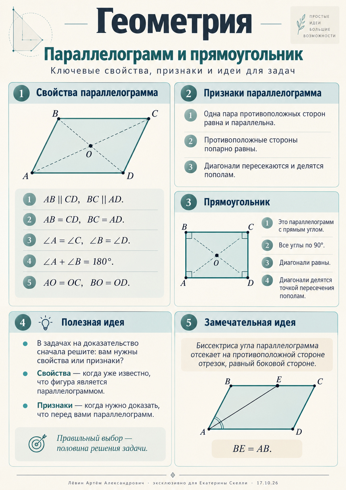

Запись занятия / 17.10.2026 / 8 класс
От фигуры
к доказательству
Параллелограмм, прямоугольник и позиционные системы счисления: два самостоятельных маршрута повторения, объединённых точностью рассуждений.

Схема / 01
Общее наблюдение превращаем в точное утверждение — и выбираем свойство или признак.
Параллелограмм
Сначала устанавливаем, что известно о фигуре. Свойства можно использовать лишь после этого.
Определение. Параллелограмм — четырёхугольник, у которого противоположные стороны попарно параллельны.
AB = CD, BC = AD
∠A = ∠C, ∠B = ∠D,
∠A + ∠B = 180°
AO = OC, BO = OD
P = 2(AB + BC)
Примеры с занятия
Если P = 54 см и AB : BC = 5 : 4, положим AB = 5x, BC = 4x.
x = 3
AB = 15 см, BC = 12 см
Если ∠A : ∠B = 2 : 3, соседние углы в сумме дают 180°.
x = 36°
∠A = 72°, ∠B = 108°
Отношение 5 : 4 означает 5x и 4x. Само отношение ещё не задаёт длины сторон.
Три признака
Признак нужен, чтобы доказать, что четырёхугольник — параллелограмм. Достаточно одного подходящего признака.
Равны и параллельны
Одна пара противоположных сторон одновременно равна и параллельна.
Попарное равенство
Обе пары противоположных сторон равны.
Диагонали
Диагонали пересекаются и точкой пересечения делятся пополам.
Как строить доказательство
Выпишите условие. Отделите известное от того, что нужно доказать.
Найдите треугольники; при необходимости проведите диагональ, медиану или среднюю линию.
Докажите конкретные равенства и параллельность. Обоснуйте их признаками равенства треугольников или свойствами средних линий.
Назовите признак параллелограмма и запишите вывод.
Середины противоположных сторон
В параллелограмме ABCD точки M и N — середины AB и CD. Докажем, что AMCN — параллелограмм.
Открыть цепочку доказательства
AM ∥ CN, поскольку AB ∥ CD. Также AM = AB/2 = CD/2 = CN. Одна пара противоположных сторон четырёхугольника AMCN равна и параллельна: применяем признак 1.
Диагонали и равные отрезки
В параллелограмме ABCD на диагонали AC выбраны точки A, E, O, F, C в указанном порядке, причём AE = CF. Докажем, что BEDF — параллелограмм.
Открыть цепочку доказательства
AO = OC и AE = CF, следовательно, EO = AO − AE = OC − CF = OF. Кроме того, BO = OD. Значит, диагонали EF и BD четырёхугольника BEDF делятся пополам в точке O: признак 3.
Середины сторон произвольного четырёхугольника
Если последовательно соединить середины сторон выпуклого четырёхугольника, получится параллелограмм.
Почему это работает?
Проведите одну из диагоналей исходного четырёхугольника. Две противоположные стороны внутреннего четырёхугольника будут средними линиями двух треугольников: обе параллельны одной диагонали и равны её половине. Признак 1 завершает доказательство.
Прямоугольник и биссектрисы
Важные выводы получаются из свойств параллельных прямых и равнобедренных треугольников.
Биссектрисы
Биссектрисы двух соседних внутренних углов параллелограмма перпендикулярны:
Если биссектриса угла DAB пересекает сторону CD в точке K, то DK = AD: треугольник ADK равнобедренный.
Оговорка: K должна лежать именно на стороне CD. Биссектриса не обязана делить эту сторону пополам.
Прямоугольник
Это параллелограмм с прямым углом. Все его углы равны 90°, противоположные стороны равны, диагонали равны и делятся точкой пересечения пополам.
Параллелограмм с одним прямым углом.
Параллелограмм с равными диагоналями.
Почему равные диагонали дают прямоугольник?
В параллелограмме ABCD пусть AC = BD. Треугольники ABC и BAD равны по трём сторонам: AB — общая, BC = AD, AC = BD. Значит, ∠ABC = ∠BAD. Они соседние и в сумме составляют 180°, следовательно, каждый равен 90°.
Системы счисления
Основание определяет алфавит цифр и вес каждого разряда. Степени основания отсчитываем справа налево, начиная с нуля.
| Основание | Допустимые цифры | Группировка двоичной записи |
|---|---|---|
| 2 | 0, 1 | — |
| 8 | 0–7 | по 3 (триады) |
| 10 | 0–9 | — |
| 16 | 0–9, A–F | по 4 (тетрады) |
Буквы в шестнадцатеричной: A = 10, B = 11, C = 12, D = 13, E = 14, F = 15.
Запись (78)8 недопустима: цифры 8 в восьмеричной системе нет. Аналогично запись (1G)16 недопустима.
В десятичную систему
Каждую цифру умножаем на основание в степени её разряда и складываем.
(A5)16 = 10·16 + 5 = 16510
Из десятичной системы
Делим число с остатком на новое основание до нулевого частного, затем читаем остатки снизу вверх.
20 = 8·2 + 4
2 = 8·0 + 2
16510 = 2458
Триады и тетрады
Двоичная запись связывает восьмеричную и шестнадцатеричную системы. Группируем справа налево; недостающие нули дописываем только слева.
Триады
Одна восьмеричная цифра соответствует трём двоичным.
Тетрады
Одна шестнадцатеричная цифра соответствует четырём двоичным.
Через 2
Переведите в двоичную, затем перегруппируйте разряды.
Примеры с занятия
10102 = A16
3D516 = 0011 1101 01012
Единиц: 2 + 3 + 2 = 7.
79416 = 0111 1001 01002
= 011 110 010 1002 = 36248
Записывая двоичные тетрады, сохраняйте четыре цифры для каждой шестнадцатеричной цифры: 3 → 0011, D → 1101, 5 → 0101.
10 заданий
Тренировочный блок из пособия. Выполните решения на бумаге, затем раскройте ориентиры. Отмечайте завершённые задания.
В параллелограмме ABCD периметр равен 84 см, AB : BC = 4 : 3. Найдите AB и BC.
Ответ и ориентир
AB = 24 см, BC = 18 см. Из 2(4x + 3x) = 84 получаем x = 6.
В параллелограмме ABCD ∠A : ∠B = 4 : 5. Найдите все четыре угла.
Ответ и ориентир
∠A = ∠C = 80°, ∠B = ∠D = 100°.
Периметр параллелограмма 70 см. AB на 5 см больше удвоенной BC. Найдите стороны.
Ответ и ориентир
BC = 10 см, AB = 25 см; 2[(2x + 5) + x] = 70.
В параллелограмме ABCD диагонали пересекаются в O. На AC точки расположены в порядке A, E, O, F, C, причём AE = CF. Докажите, что BEDF — параллелограмм.
Ориентир доказательства
AO = CO, AE = CF → EO = FO; BO = DO. Диагонали EF и BD делятся пополам в O: признак 3.
В произвольном выпуклом четырёхугольнике SKLE точки A, B, C, D — середины сторон SK, KL, LE, ES. Докажите, что ABCD — параллелограмм.
Ориентир доказательства
Проведите SL. AB и CD — средние линии двух треугольников, поэтому AB ∥ CD и AB = CD = SL/2. Признак 1.
В параллелограмме ABCD точка M — середина AB, причём MC = MD. Докажите, что ABCD — прямоугольник.
Ориентир доказательства
Отметьте K — середину CD. AMKD — параллелограмм, так что MK ∥ AD. В равнобедренном треугольнике MCD медиана MK также высота, значит MK ⟂ CD и AD ⟂ CD.
Переведите (3B)16 в десятичную систему. Проверьте допустимость записи.
Ответ и ориентир
3·16 + 11 = 5910. B — допустимая цифра шестнадцатеричной системы.
Переведите 23710 в восьмеричную систему. Выполните обратную проверку.
Ответ и ориентир
3558; 3·64 + 5·8 + 5 = 237.
Переведите 6AF16 в двоичную систему. Сколько единиц в двоичной записи?
Ответ и ориентир
0110 1010 11112; 2 + 2 + 4 = 8 единиц.
Переведите 7B416 в восьмеричную систему через двоичную. Покажите оба разбиения на группы.
Ответ и ориентир
0111 1011 01002 → 011 110 110 1002 → 36648.
Вернуться к конспекту
Печатное пособие сохраняет все объяснения, упражнения и ответы. Постер помогает быстро повторить геометрию.
